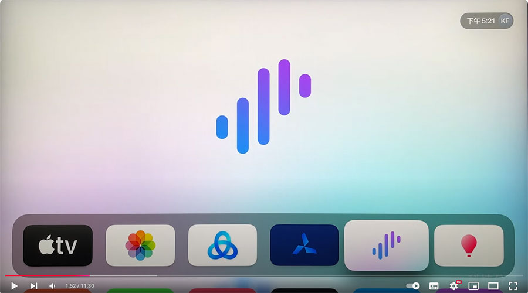

Apple TV 旁路由设置教程，轻松实现全家设备科学上网，apple tv vpn设置网关科学上网，翻墙比软路由更简单。Apple TV 不能用不能上网的问题解决办法.
步骤：
1、先将 Apple TV 的 IP 和 DNS 改成手动，固定IP和DNS
2、再开启一款代理软件，Shadowrocket/Stash/QX等
3、在代理软件添加订阅节点，再开启代理
4、局域网的设备就可以通过 Apple TV 科学上网了
5、局域网的WiFi IP改成手动，将路由器/网关改成 Apple TV 的IP，DNS也改为 Apple TV 的IP。
6、保存
